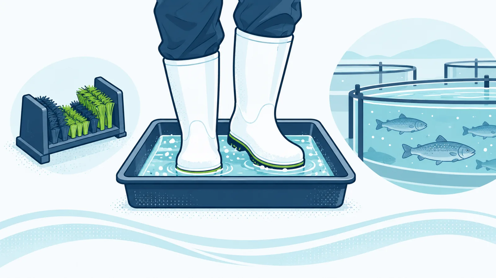
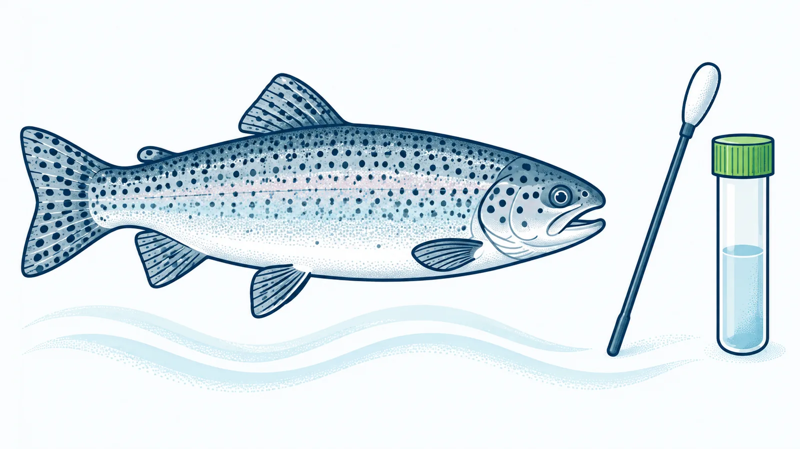
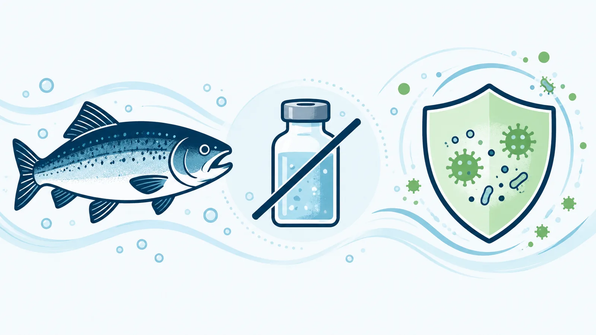
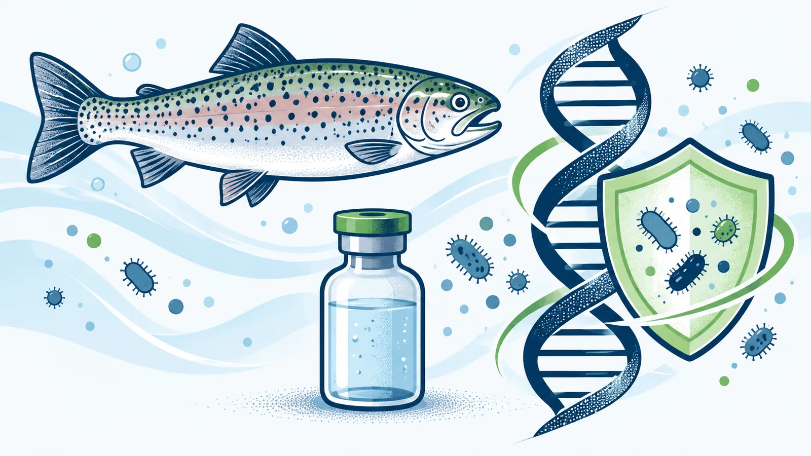
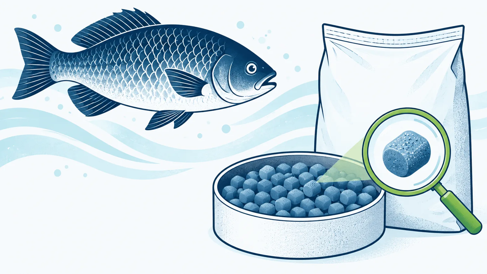
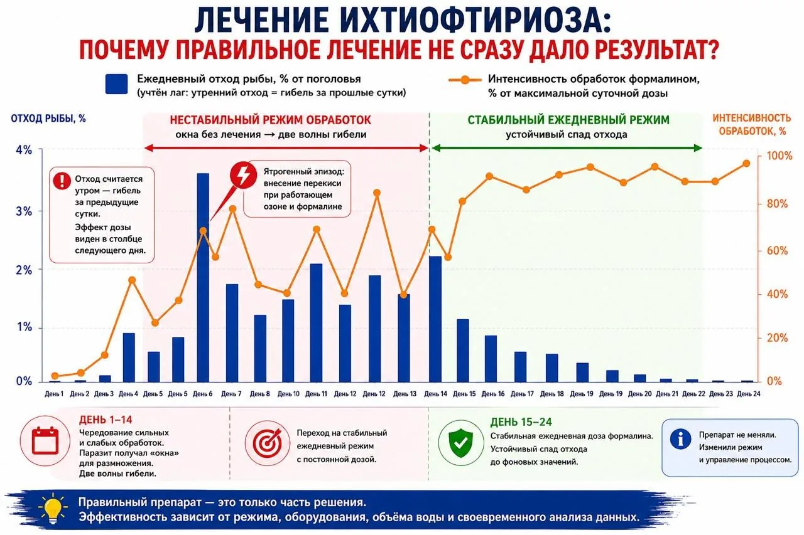

Дезковрик в рыбоводном хозяйстве: как превратить раствор в реальный барьерОшибки в дезинфекции обуви и инвентаря, из-за которых инфекция всё равно попадает на площадкуЧитать статью →Экспертные материалы
Блог об ихтиопатологии и здоровье рыб
Практические разборы для руководителей и специалистов рыбоводных хозяйств: диагностика заболеваний, биобезопасность, профилактика и управление производственными рисками.
6 материаловПрактика и диагностикаАвтор — Светлана Рудакова
Все публикации
Статьи и практические кейсы

Почему анализы рыбы из одного бассейна дают разные результатыКак организовать отбор проб при болезнях рыб и снизить риск ложного диагнозаЧитать статью →
Антибиотики в рыбоводстве не заменяют профилактикуКогда антибактериальные препараты оправданы и как снизить риск антибиотикорезистентностиЧитать статью →
Аутовакцины для рыб: когда индивидуальный подход оправданКак аутогенные вакцины помогают управлять бактериальными инфекциями в аквакультуреЧитать статью →
Микотоксины в корме для рыбы: как распознать риск и защитить экономику хозяйстваПочему условия хранения корма важны для здоровья рыбы, конверсии и себестоимости продукцииЧитать статью →
Формалин применяли по инструкции, но рыба продолжала гибнуть: кейс УЗВ с потерями около 3,5 млн рублейНа форелевом хозяйстве с установкой замкнутого водоснабжения произошла вспышка ихтиофтириоза. Для борьбы с эктопаразитами использовали формалин: препарат был выбран обоснованно, дозировки рассчитывались по литературным рекомендациям, персонал выполнял обработки по утвержденной схеме.Читать статью →